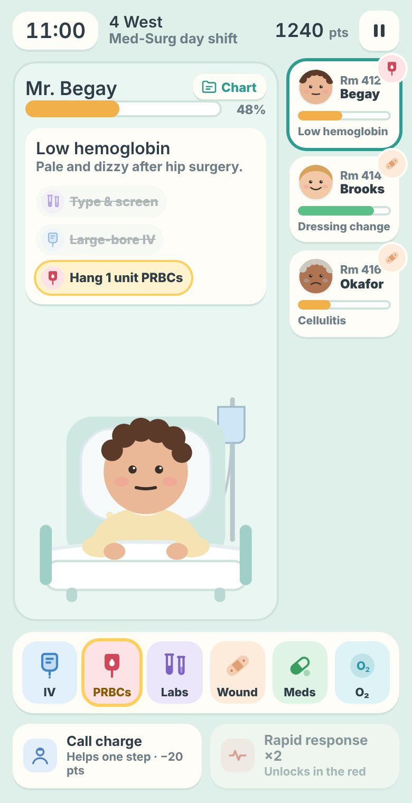

A cozy nursing game · New
Med-Surg Shift
You're the nurse on a med-surg floor with three patients and a 12-hour shift that lasts about three minutes. Each patient has a problem, like low hemoglobin or pneumonia, and the next intervention lights up: draw a type & screen, place a large-bore IV, hang a unit of blood. Every lab result and medication pops up as you go, a vitals monitor flashes red when something's off, and each patient has a chart with their history and allergies.
Then things happen. Patients desat, bleed, spike fevers or get too sleepy from pain meds. Some need to be rushed to surgery, and some need the ICU no matter what you do. Three shifts get harder as you go, ending with strokes rushed to CT and chest pain rushed to the cath lab. You can always call charge or the rapid response team for help.
